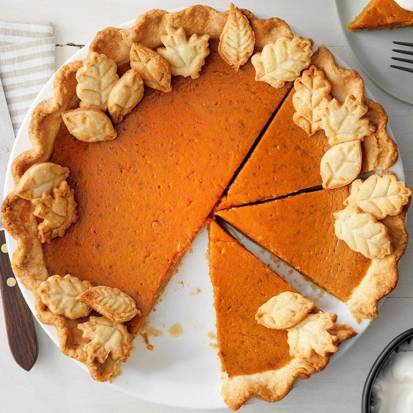

Pumpkin Pie

Ingredients
- 1 cup (237 ml) flour
- 1 teaspoon (4.93 ml) sugar
- 0.25 (1/4) teaspoons (1.23 ml) salt
- 3 tablespoons (44.36 ml) canola oil
- 1 tablespoon (14.79 ml) butter, melted
- 2 to 3 tablespoons (29.57 ml to 44.3 ml) cold water
Filling
- 1 large egg
- 1 large egg white
- 0.25 (1/4) cups (59.15 ml) sugar
- 0.5 (1/2) teapoons (2.46446 ml) salt
- 0.5 (1/2) teapoons (2.46446 ml) ground cinnamon
- 0.125 (1/8) teaspoons (0.616 ml) of allspice, nutmeg and cloves, each
- 15 ounces (1 can) (443.6 ml) pumpkin
- 1 cup (237 ml) fat-free evaporated milk
Steps
- In a small bowl, combine the flour, sugar and salt. Using a fork, stir in oil and butter until dough is crumbly.
Gradually add enough water until dough holds together. Roll out between sheets of waxed paper into an 11-in. circle. Freeze for 10 minutes.
- Remove top sheet of waxed paper; invert crust into a 9-in. pie plate. Remove the remaining waxed paper. Trim and flute edge. Chill.
- Roll dough scraps to 1/8-in. thickness. Cut with a 1-in. leaf-shaped cookie cutter. Place on an ungreased baking sheet; bake at 375 degrees F (190.56 degrees)
for 6-8 minutes or until edges are very lightly browned. Cool on a wire rack.
- In a large bowl, beat the egg, egg white, sugars, salt and spices until smooth. Beat in pumpkin. Gradually beat in milk. Pour into crust. Bake at 375 degrees F (190.56 degrees)
for 45-50 minutes or until a knife inserted in the center comes out clean. Cool on a wire rack. Garnish with leaf cutouts. If desired, top with whipped cream. Refrigerate leftovers.
Suggested Sides